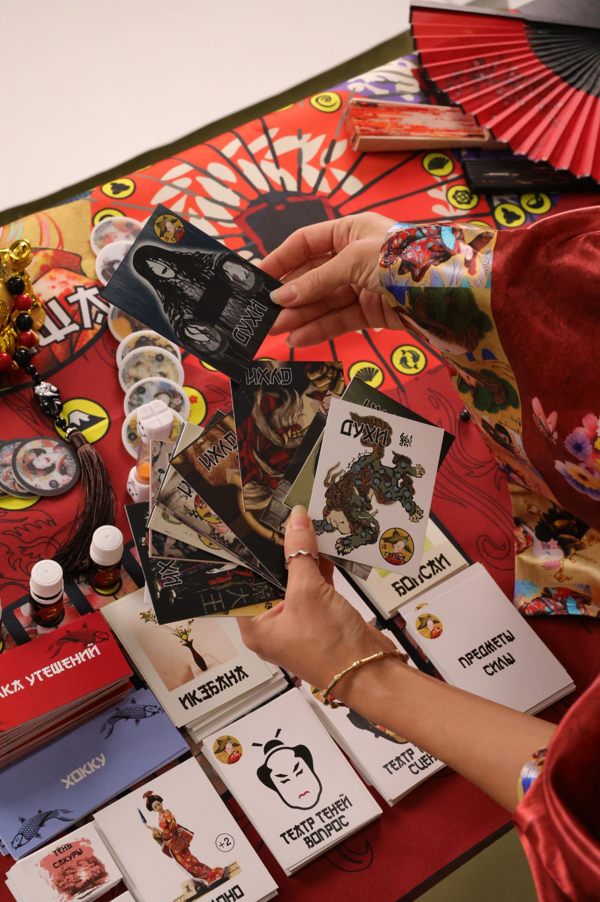
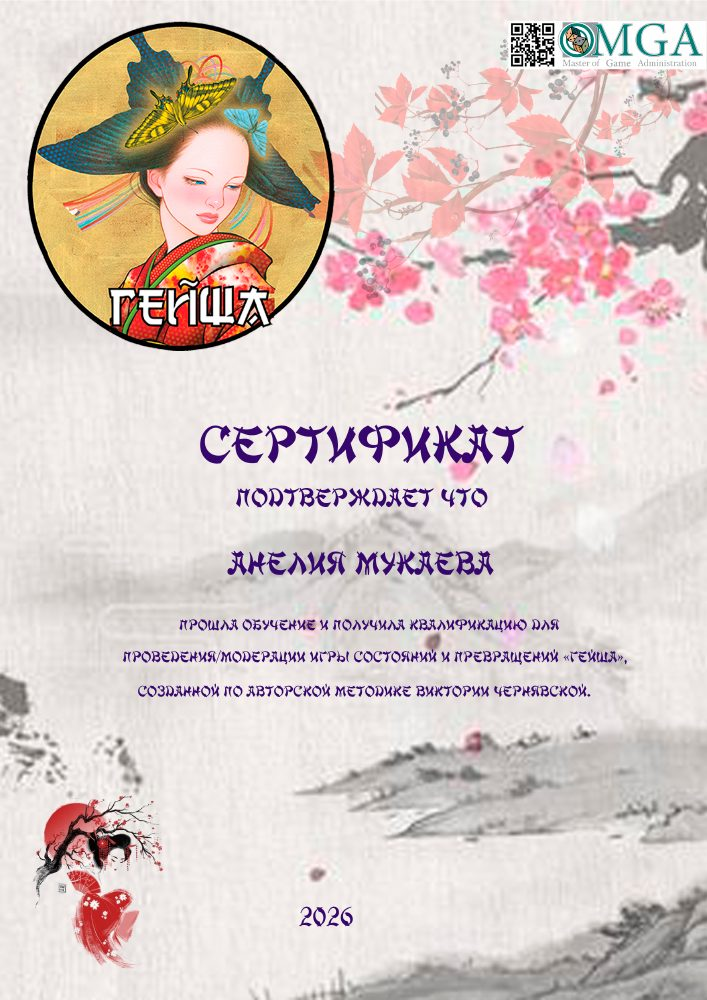

Игра о балансе духовного и материального, женского и мужского, и о состоянии, из которого желания сбываются легче.

Иногда нужно не решение, а несколько часов тишины среди тех, кто тебя не осудит.
Игра «Гейша» — это не просто костюмированная игра, это игра, где ты окунаешься в образ и проживаешь его. Задания, которые получаешь во время передвижения, буквально заставляют читать между строк и глубоко мыслить. Игра подсвечивает и раскрывает то, в чём нуждаешься на данный момент. Я думала, что во мне больше духовного смысла! Это не так! Оказалось, как раз его и не хватало. Больше я зациклилась на материальном плане — и ведь это верно. Грустненько. Удивительно: если ты не честна с собой, игра не впускает тебя. Все очки, которые я получала, удивительным образом сходились к числу 6, которое я изначально по интуиции сама выбрала. Волшебство. Игра подсветила: надо быть дипломатом в своей жизни. Очень понравилась игра! Благодарю моего проводника Анелию за прекрасную игру «Гейша». Хоть ненадолго почувствовать себя актрисой.
Эльмира, 58 летСкриншот отзыва
Сертифицированная ведущая игры «Гейша» по авторской методике Виктории Чернявской, 2026.
Автор игры — Виктория Чернявская, я сертифицированная ведущая. Хочешь играть регулярно? Абонемент на 3 групповые игры — на 15% выгоднее. Пришла с подругой — 5 000 ₸ скидки на твою следующую групповую игру.
Да. Правила простые, я объясняю всё по ходу, а главное в игре — твой запрос, а не опыт.
Гейша — женская игра, её проходят только женщины. Мужчина может присоединиться к общему кругу в особой роли Императора: он не играет сам, а присутствует, наблюдает и участвует через эту роль, например как судья. Отдельной игры для мужчин нет. Место Императора стоит так же, как место участницы в группе. Если хочешь прийти в этой роли, напиши заранее. Лила и Территория денег открыты и для мужчин, и для женщин.
Нет. Удобная одежда, честное желание и готовность побыть с собой.
Лила помогает увидеть повторяющиеся сценарии. Гейша больше про состояние, энергию и баланс, из которого проще двигаться к желаниям.